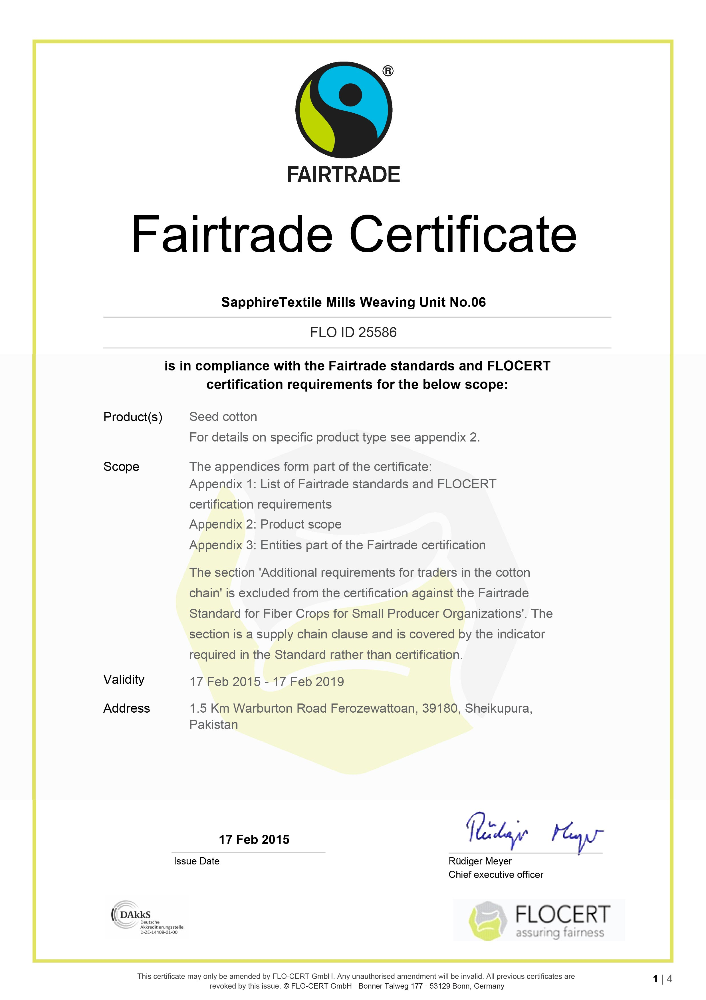
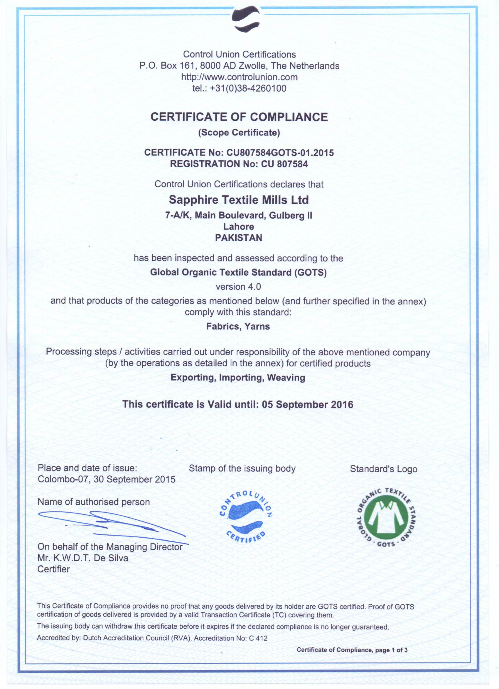
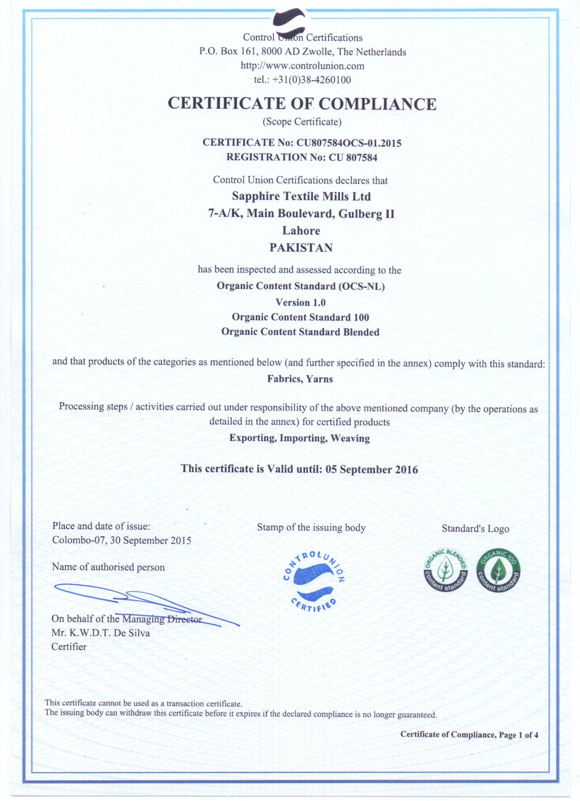

- STML Weaving unit
- Fabric manufacturing unit of STML is producing more than 4 million meters of different width fabrics with the turnover of about US$ 200K per month. STML weaving consists of following machineries.
- Back process
- 4 warp machines (direct)
- 1 sectional warping
- 4 sizing machines.
- All are of Benninger Germany.
- Looms
- 155 air jet looms of 190cm (including 10 dobby)
- 52 air jet looms of 210cm (including 4 dobby)
- 36 air jet looms of 280cm (including 8 dobby)
- 102 air jet looms of 340cm (including 6 dobby)
- 12 Rapier looms of 190/210/360cm
- 4 jacquard looms.
- 1 bit/swatch loom for prototypes.
- All Tsudakoma Toyota, Picanol and Dornier
Fabrics for fashion/apparel, work-wear and home-textiles are being produced and exported to many countries which mainly involve Germany, UK, Spain, Italy, Turkey, Fareast, South America and Africa
Fashion/Apparel fabrics
- 100% cotton
- Super stretch fabrics (like bi stretch & dual FX)
- Wool / Cashmere
- Lyocell
- See island
- Silk
- Linen
- Bamboo
- Modal
- CoolMax
- Thermolite
Work-wear
- Basic Poly/cotton fabrics
- Modacrylic (protex)
- Meta/para aramids
- Antistatic (carbon & steel fibers)
- Viscose
- Nylon (cordura)
- 100% HTY polyester
- Batchers to produce long pieces of about 1500mtrs without seam
Home textile
-
To produce fabrics with different colours in warp for home textiles, our production unit is equipped with sectional warping machine to make as many as 150 sections. Also have facility to insert 6 different colours in weft. We can produce fabrics with both leno & tuck-in selvedges. With Jacquard looms we can produce weave design with maximum repeat size.
-
Certification
- By keeping in view different requirements of customers from all over the world, we are keeping following certification for our production unit.


